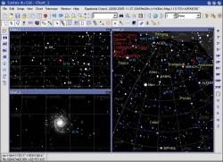
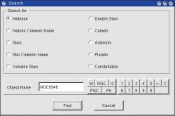
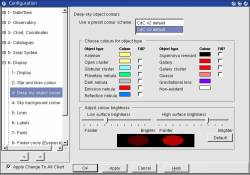
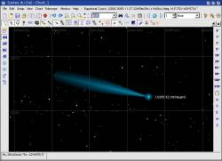
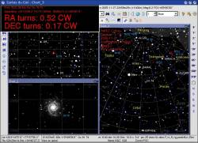

Version 3 alpha 0.0.9
Amélioration de l'interface utilisateur et plus de fonctions
 Quand le bouton “Link all chart” est selectionné toutes les cartes affichée sur l'écran vont toujours montrer le même objet en même temps.
{kind=link}
Chaque carte peut être configurée individuelement. Vous pouvez changer des options comme la projection, le champ de vision, la couleur, … Si vous utilisez le paneau de configuration n'oubliez pas d'enlever la coche “apply to all chart” dans ce cas.
Chaque fois que vous changez la position d'une des cartes les autres sont mise a jour pour cette nouvelle position.
Le bouton avec “l'ancre” juste a coté permet de maintenir la carte centrée sur un objet selectionné. Vous pouvez verouiller n'importe quel type d'objet.
L'interface telescope utilise aussi cette fonction pour maintenir la carte a la position du telescope. Décochez ce bouton si vous voulez afficher une carte pour une autre position que celle pointée par le telescope
 L'écran de recherche donne plus d'options que la recherche rapide et permet de limiter le type d'objet que l'on recherche.
{kind=link}
Il est plus précis que la recherche rapide si un même nom peut etre trouvé pour plusieur type d'objet.
 L'écran de position montre la position courante sur la carte et permet de changer ces valeurs pour donner une position spécifique. Il utilise les coordonnées équatoriales en plus des coordonnées de la carte (alt/az, ecliptique, galactique).
L'écran de position montre la position courante sur la carte et permet de changer ces valeurs pour donner une position spécifique. Il utilise les coordonnées équatoriales en plus des coordonnées de la carte (alt/az, ecliptique, galactique).
Un écran de zoom permet de choisir le champ de vision avec un curseur.
 Ce nouvel écran de configuration permet de régler en détail la couleur de chaque type d'objet.
{kind=link}
La coche “Fill” permet de remplir certain objet quand on utilise le mode de dessin par ligne.
 Le résultat est une carte plus claire dans les régions ou amas d'étoiles et nébuleuses se mélangent.
Le résultat est une carte plus claire dans les régions ou amas d'étoiles et nébuleuses se mélangent.
Mais vous pouvez toujours revenir à l'ancien dessin ou tout mettre en gris si vous préférez.
 Le dessin des comètes est amélioré. Simplement un changement estétique.
{kind=link}
Interface Telescope
{kind=link}
Le téléscope manuel vous donne les informations requises pour déplacer votre téléscope d'un premier objet, généralement une étoile brillante, vers un second, la faible nébuleuse que vous voulez observer.
Appuyez sur le bouton “Connect Telescope” pour afficher le nombre de tour a effectuer pour chaque axe de la monture.
La même information est également présente dans la fenêtre d'information détaillée. Cela fonctionne pour des monture équatoriale ou azimutale.
Dans la configuration du telescope vous indiquez le nombre de tour de vis par degré ou par heure d'ascension droite. Je vous laisse experimenter avec la coche “Revert” pour afficher la bonne direction du mouvement (Clock-Wise ou Counter-Clock-Wise). Cela dépend de la façon dont sont montée les vis de la monture et de quel coté vous les regardez. N'oubliez pas de changer de sens après avoir retourné une monture allemande.
Si votre monture est motorisée vous pouvez indiquer de la même manière le nombre de seconde a presser le bouton de la raquette.
L'interface de telescope INDI fonctionne a nouveau. Un bug dans la version précédente empechait de voir la position du telescope.
La dernière version des drivers INDI est installée dans le répertoire plugins. Si vous voulez utiliser une autre version de INDI il faut les effacer de ce répertoire ou lancer indiserver avant Cartes du Ciel.
Voir indi.sourceforge.net pour plus d'informations sur INDI.
Quand vous avez choisi INDI comme interface de telescope un nouveau sous-menu “Control Panel” apparait dans le menu Telescope.
C'est pour lancer Device Control Device, une application qui permet de controler tous les aspects d'INDI.
Voir pygtkindiclient.sourceforge.net/ pour des informations et pour installer cette application.
Vous devez encore configurer le repertoire ou DCD est installé dans l'écran de configuration system/telescope.
 Vision de nuit
Vision de nuit
Le mode “vision de nuit” est de retour. Les images des boutons sont également modifiée afin d'offrir une meilleur intégration.
Vous pouvez choisir ces bouton indépendament du mode de nuit si ils sont mieux adapté au thème d'affichage de votre ordinateur.
Avec Windows l'option “FullScreen” permet d'éliminer les bordure de fenêtre brillantes.
Utilisez les options de votre gestionnaire de fenêtre pour modifier tout autre option qu'une application polie ne prendra pas le risque de modifier.
Autres changement :
- Les labels ne sont plus éditable par défaut. Appuyez sur le bouton “Edit Labels” si vous voulez les modifier.
- Les CD-rom RealSky sont supportés comme dans la version 2.76 mais vous pouvez maintenant modifier la carte quand l'image est affichée.
- Vous pouvez afficher le nom commun des étoiles brillantes comme label.
- Les paramètres de la carte peuvent être affiché sur la carte plutot que dans la barre de menu.
- Une ligne peut être affichée qui montre la dépression de l'horizon due a l'altitude de l'observateur. Cet effet est particulierement sensible depuis un endroit comme le Mona Kea. Faite attention de bien renseigner l'altitude de votre observatoire.
- On utilise maintenant le rafraichissement rapide lors d'un déplacement de la carte ou un zoom avec le clavier. Cela donne un mouvement plus souple.
- Il est aussi possible d'utiliser Xplanet avec Windows pour afficher les planètes. Cela permet par exemple d'afficher l'ombre des satellites de Jupiter.
Avec Xplanet 1.2.0 la correction n'est plus necessaire. Merci d'utiliser cette version.